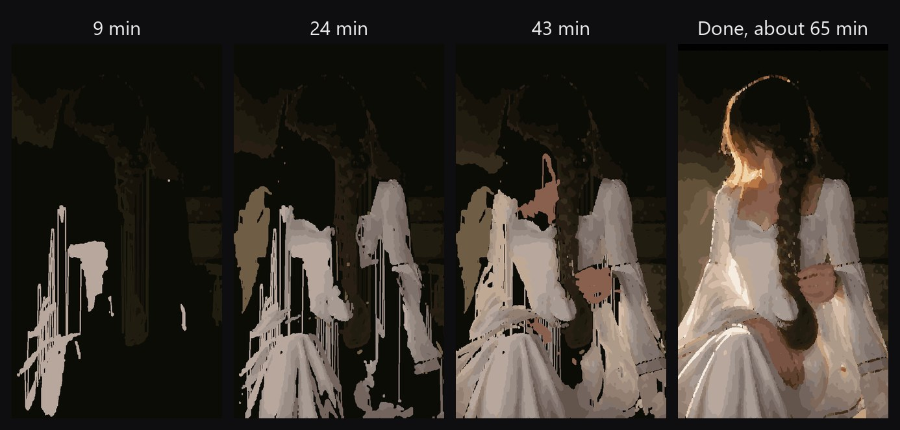
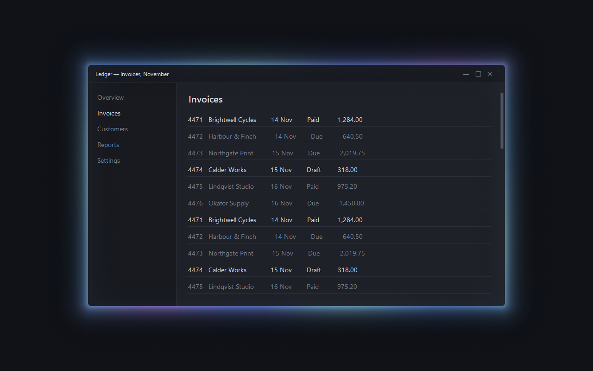

Give Antigravity the mouse.
/computer-use is a skill for Google Antigravity. The agent sees the screen, reads each app's accessibility tree and drives real Windows and macOS apps with your real mouse and keyboard. Esc stops it at once.
Open source under the MIT licence. Not affiliated with Google.

2,832 steps, one prompt
Gemini 4 Hydrogen painted this in Microsoft Paint. Here your browser redraws the plan it ran, step for step. It is a replay, not a recording: the recording is below.
One prompt. About an hour of real painting.
The agent drove Paint through a stroke plan scripted from the photo: 2,553 strokes in 40 exact colours, each colour typed into Paint's own colour editor, each stroke a real drag of the mouse.
The real recording, shown 200× faster. The bar and glow are drawn in, since they're hidden from screen recordings by default.

Painting on the left, photo on the right.
Slide the handle. The painting is flat colour laid down in long back-and-forth rows, which is why it looks like a painting and not a print.
It ran unattended for about 65 minutes as a single plan of 2,832 steps.


It reads the app before it looks at it.
Every app describes its own controls: a name, a role and a value for each button, field and slider. The agent reads that tree first, and opens a screenshot only when it needs pixel coordinates or has to judge how something looks.
Your browser keeps the same kind of tree for this page. Switch it on to see what a tree-first reader gets.
click "Edit colours" Button set_value HexTextBox #19150C set_value "Size" Slider 3 drag 6 points, read from a screenshot
Four steps from the portrait's plan. The first three find a control in the tree, by its name or its id, so no pixel is involved. Only the stroke works in pixels.
A task is a short loop.
A skill and a small local service. It uses the model you already have in Antigravity: no API key, no second LLM, no MCP server.
readyStarts a task and reports whether the desktop is ready to be used.
launch --app notepad.exe --observeOpens the app once you have approved it, brings it to the front and returns its window, a frame and a screenshot.
snapshot --hwnd H [--image]Reads the window's tree. The image is optional and only for when pixels matter.
click --name Settings --role ButtonActs on what it just observed: click, type, set a value, press keys, drag through up to 400 points, fill in an Open or Save dialog. Every action returns a fresh frame and tree to check against.
endFinishes the task. An input whose reply was lost is never sent again.
Flags are shortened here. The full command table is in the skill itself.
Think once. Then run thousands of steps.
The model is the slow part of desktop control: each turn costs seconds, while a step runs in a fraction of that. So plan sends many steps at once. A 30-turn task drops to about 9.
A plan runs as checked batches of 8 and keeps a ledger of what landed. If it stops, it resumes from the ledger without replaying input that may already have landed.
What was in the portrait's 2,832 steps
- 2,553 strokes. Each one a continuous drag of the real mouse across Paint's canvas.
- 123 steps on controls from the tree. Edit colours, its hex box and confirm button, Fill, Brushes and the Size slider, each found by name or id.
- 156 plain clicks. One fills the canvas. The rest land on empty grey, so each colour change starts a fresh batch.
Counted from the plan file this page replays.
Esc stops it at once.
Wherever you are, Esc ends the task and lets go of every key and button. Ask it to carry on and it starts fresh. Try it on this page: the replay and its bar obey the same key.

A small bar says what it is doing right now.
Working, waiting for your answer, or stopped. Your own mouse and keyboard don't pause it, so stopping is always a deliberate key: Esc, Ctrl Alt F12, or the bar's Stop.

Nothing runs without your OK.
Approval comes through Antigravity's own approvals with the one-line install, or through this card in standalone mode, where saving, pasting and deleting ask again. Terminals and code editors are always click-only, so it can't type commands into them. Sign-ins and admin prompts are always left to you.

The stop keys are written on the menu.
The bar can be moved or thrown to another edge, the glow has three brightness levels, and both stay out of screen recordings unless you ask.

A soft glow outlines the window it is working in.
Blue with a touch of violet, never static, and left out of the agent's own screenshots. The pictures in this section are clean renders from the product's own renderer, shown around a sample window. They are not captures of anyone's desktop.
The plain facts.
- Model
- The one you already use in Antigravity. No API key, no second LLM, no MCP server.
- Privacy
- The project has no telemetry connection. Screenshots and accessibility text go to Antigravity's configured model.
- Windows
- x64. The install includes its own Node and native helpers.
- macOS
- macOS 14 or later, Apple silicon or Intel. You grant Accessibility and Screen Recording yourself. Helpers are signed with the project's own certificate, not an Apple Developer ID.
- Release
- 1.0.3, stable on both platforms. Changelog
- Licence
- MIT. Built on ridelink0/claude-computer-use.
Install
Download the archive and SHA256SUMS.txt from the latest release, and check the archive before you run anything from it. The release lists a SHA-256 for every archive, and installed copies update from signed metadata.
Windows
In PowerShell, in the folder with the ZIP and SHA256SUMS.txt.
$zip = Get-Item .\AntigravityComputerUse-*-windows-x64.zip
$want = ((Select-String -Path .\SHA256SUMS.txt -SimpleMatch $zip.Name).Line -split '\s+')[0]
(Get-FileHash $zip -Algorithm SHA256).Hash.ToLower() -eq $want # must print True
Expand-Archive $zip -DestinationPath .
.\AntigravityComputerUse-windows-x64\install.cmd --integration direct --sidecarmacOS
In Terminal, with the macos-arm64 (Apple silicon) or macos-x64 (Intel) archive and SHA256SUMS.txt.
shasum -a 256 -c SHA256SUMS.txt --ignore-missing # must print OK
tar -xzf AntigravityComputerUse-*-macos-*.tar.gzThen run install.command and Setup.Mac.Permissions.command from the extracted folder. Mac guide
Or one line, on Windows
The convenience route. install.ps1 downloads the same 1.0.3 archive and verifies its SHA-256 before it installs anything.
irm https://raw.githubusercontent.com/shayann07/antigravity-computer-use/main/install.ps1 | iexThen open Antigravity and try
Type the command, then say what you want done.
/computer-use
Open Paint, draw a red circle in the middle, save it to my Desktop as circle.png.